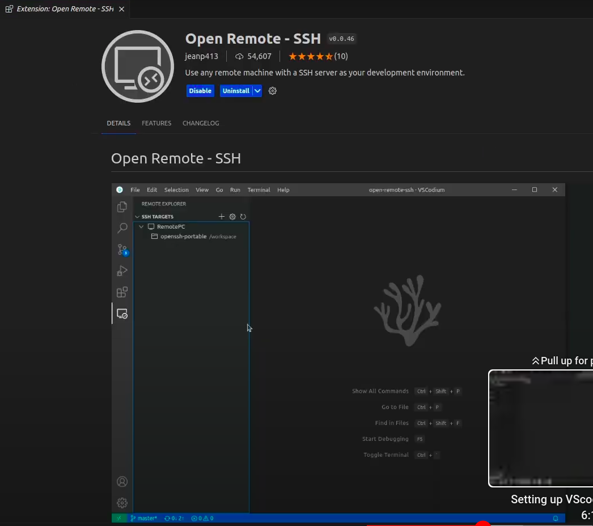

Using SSH access on RISC-V instance
After getting SSH command and credentials from Cloud-V administrator, users can log in to RISC-V instance and start development like any Linux machine without GUI.
Setting up VScodium with RISC-V
It may not be convinient for users to use terminal editors (like Vim and Nano) if they are not accustomed.
At present VScode remote extension does not have support for RISC-V architecture but VScodium supports it.
This section explains how you can set up VScodium on x86 machine to get remote development access to RISC-V compute instance (assuming both the machines have SSH installed).
- Install VScodium from this link
- Install Open Remote - SSH Extension from jeanp413

- Use
Ctrl+Shift+pto open command pallet and search remoteRemote-SSH: Connect to host... - Enter username, publicly accessible IP and port of the compute instance which you want to connect to.